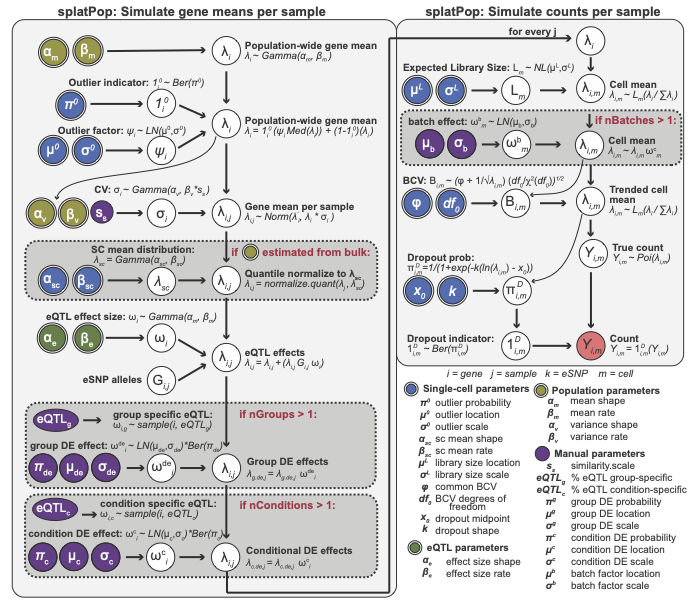
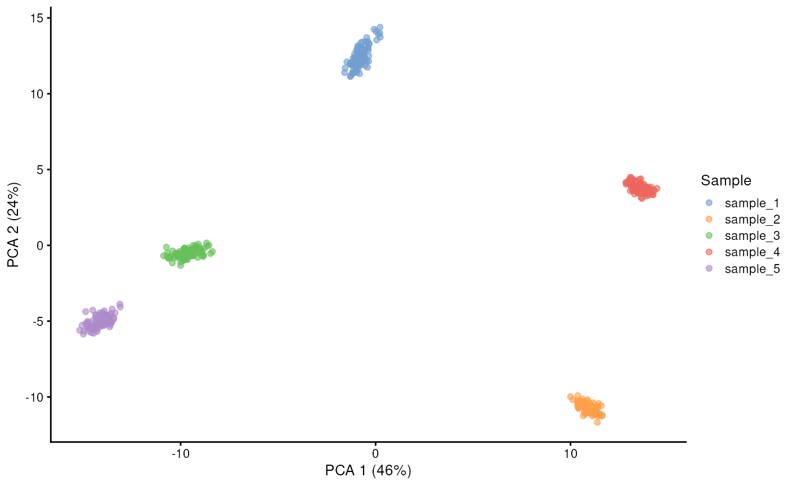
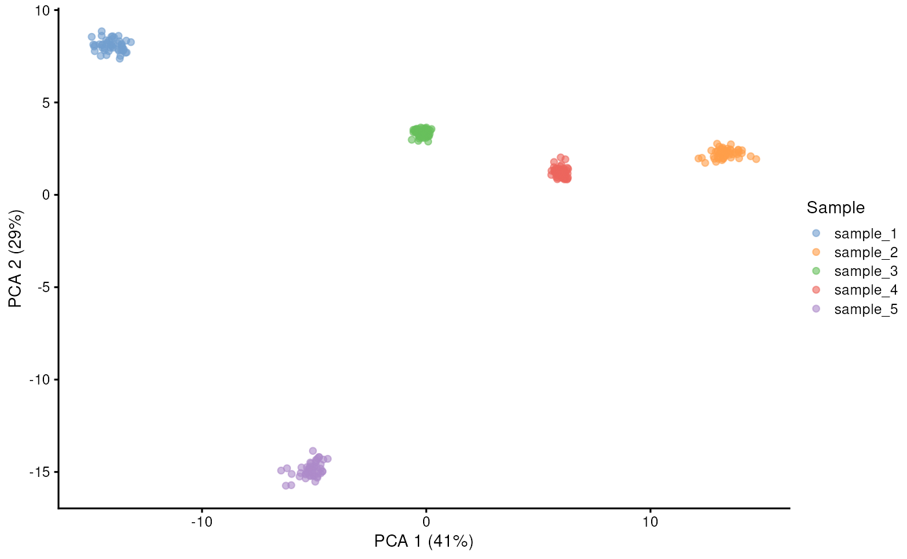
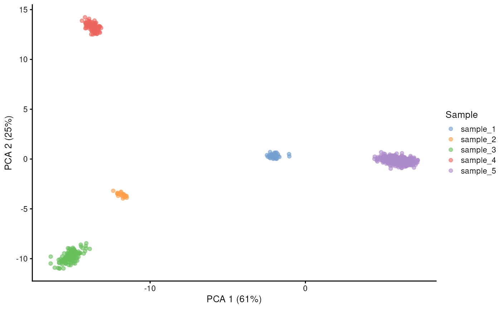
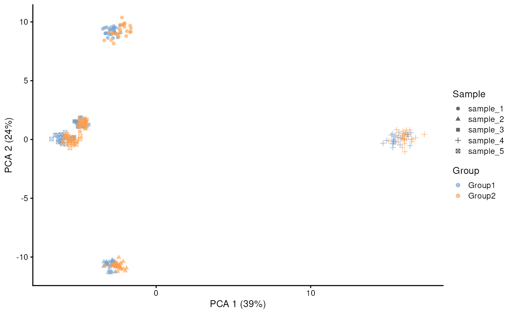
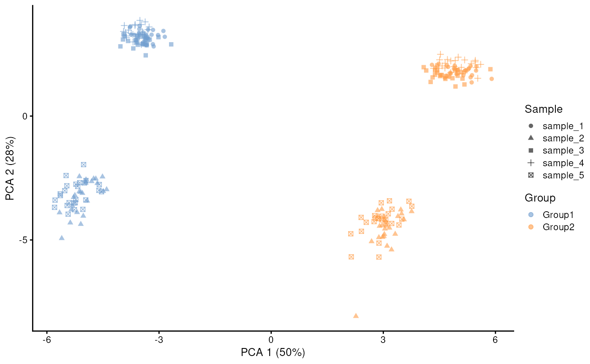
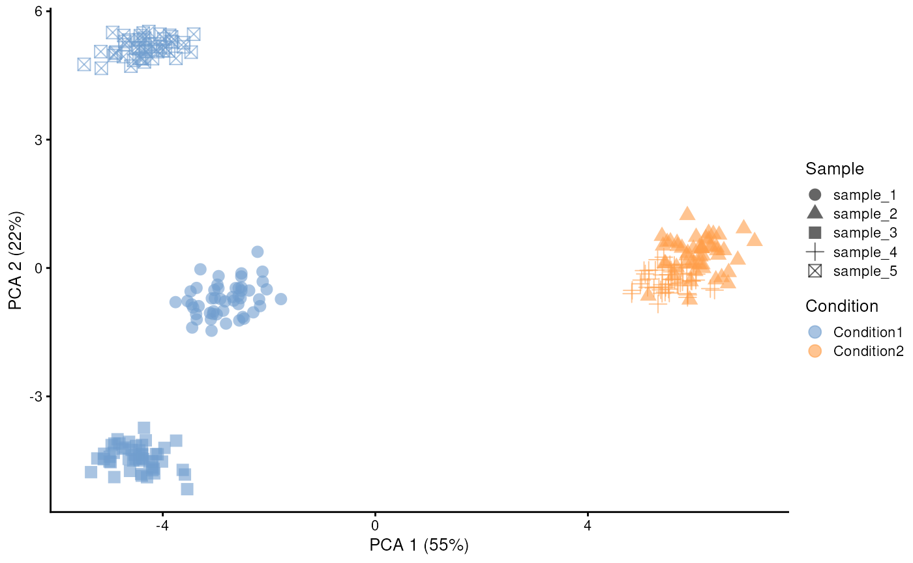
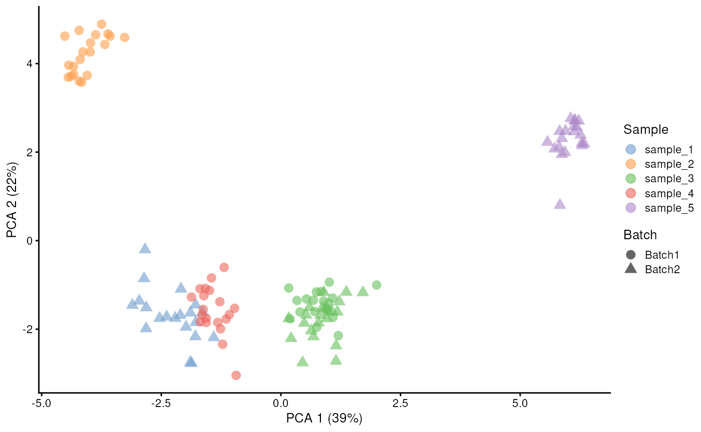
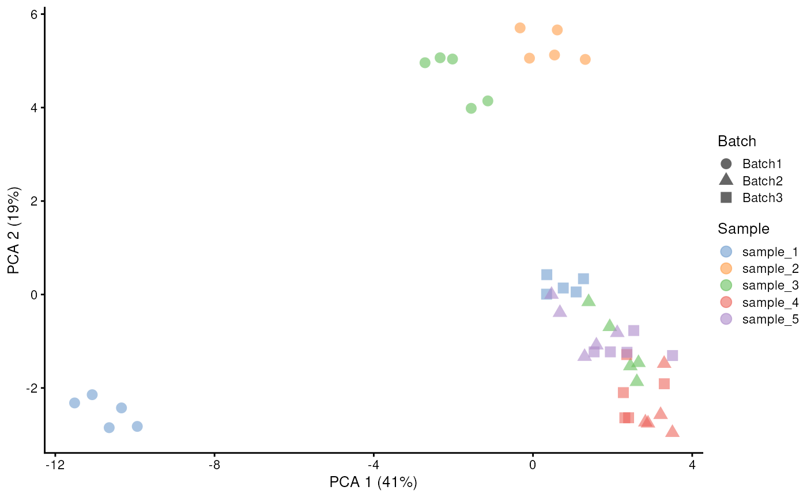
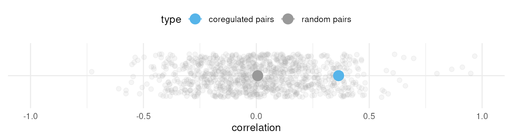

splatPop: simulating single-cell data for populations
Christina Azodi
Last updated: 30 March 2021
Source:vignettes/splatPop.Rmd
splatPop.Rmd
suppressPackageStartupMessages({
library("splatter")
library("scater")
library("VariantAnnotation")
library("ggplot2")
})
set.seed(42)Introduction
splatPop is an extension of the splat model that allows you to simulate single-cell RNA-sequencing count data for a population. Like with splat, these simulations resemble real scRNA-seq data because they use parameters estimated from empirical data. Provided with genotype information (VCF) for a population as input, splatPop simulates gene counts for multiple cells for all individuals in the population. The vcf information is used to achieve realistic population structure in the simulated data by modeling expression Quantitative Trait Loci (eQTL) effects, where the expression of a gene is associated with the genotype of the individual at a specific loci. Finally, splatPop allows for the simulation of complex data sets including:
- Cell group effects: Where multiple, heterogeneous cell-groups are simulated for each individual. These groups could represent different cell-types or the same cell-type before/after a treatment. Group effects include group-specific differential expression (DE) and/or group-specific expression Quantitative Trait Loci (eQTL) effects.
- Conditional effects between individuals: Where individuals are simulated as belonging to different conditional cohorts (e.g. different treatment groups or groups with different disease statuses). Conditional effects include DE and/or eQTL effects.
- Batch effect from multiplexed experimental designs: Like in splat, batch effects are simulated by assigning small batch-specific DE effects to all genes. splatPop allows for the simulation of different patterns of batch effects, such as those resulting from multiplexed sequencing designs.
Quick start
The primary simulation function is splatPopSimulate,
which runs through the two main phases:
-
splatPopSimulateMeans: the simulation of means for all genes for all individuals in the population. -
splatPopSimulateSC: the simulation of single-cell counts for all cells for all genes for all individuals.
The second phase is essentially a wrapper around the original
splatSimulate function, which is described in detail here. The figure below describes these two
phases. Input parameters that can be estimated from real data have
double borders and are shaded by the type of data used. The final output
(red) is a matrix of means for each gene and each individual that is
used as input to the second phase.

To get started with splatPop, you only need genotype information for
the population you want to simulate provided as a VariantAnnotation
object. A mock VariantAnnotation object can be produced using the
mockVCF function. Here we simulate single-cell
RNA-sequencing counts for 100 random genes for 6 random samples:
vcf <- mockVCF()
gff <- mockGFF()
sim <- splatPopSimulate(vcf = vcf, gff = gff, sparsify = FALSE)
#> Designing population...
#> Simulating data for genes in GFF...
#> Simulating gene means for population...
#> Simulating sc counts for Group1...
#> Done!
sim <- logNormCounts(sim)
sim <- runPCA(sim, ncomponents = 5)
plotPCA(sim, colour_by = "Sample")
Detailed look into splatPop
Step 1: Parameter Estimation
The parameters used in splatPop have sensible default values
estimated from GTEx data (v7, thyroid tissue). However, they can also be
estimated from real data provided by the user using the
splatPopEstimate. The gamma distributions describing the
population-level gene mean and variance levels can be estimated from
real population scale bulk or aggregated single-cell RNA-seq data. The
gamma distribution describing eQTL effect sizes can be estimated from
real eQTL mapping results. You can also provide this function with a SCE
object or matrix of single-cell counts to estimate single-cell
parameters described in splat.
All parameters needed for splatPop simulations are stored in a
SplatPopParams object. In addition to the compartments in
SplatParams described in detail in the Splat parameters vignette and the
parameters that are set manually (described below),
SplatPopParams also contains the following parameters that
can be estimated from real data:
-
Population parameters
-
pop.mean.shape- Shape parameter for mean expression from population scale data. -
pop.mean.rate- Rate parameter for mean expression from population scale data. -
pop.cv.param- Shape and rate parameters for the coefficient of variation (cv) across individuals from the population scale data, binned by mean expression.
-
-
eQTL effect size parameters
-
eqtl.ES.shape- Shape parameter for eQTL effect sizes. -
eqtl.ES.rate- Rate parameter for eQTL effect sizes.
-
The parameters that can be estimated are in parentheses in the
SplatPopParms object, while those that can’t be estimated
are in brackets. Those that have been changed from their default value
(either by hand or by estimation) are in ALL CAPS.
For example, we can estimate new parameter values from user provided data…
bulk.means <- mockBulkMatrix(n.genes = 100, n.samples = 100)
bulk.eqtl <- mockBulkeQTL(n.genes = 100)
counts <- mockSCE()
params.est <- splatPopEstimate(
means = bulk.means,
eqtl = bulk.eqtl,
counts = counts
)
#> NOTE: Library sizes have been found to be normally distributed instead of log-normal. You may want to check this is correct.
params.est
#> A Params object of class SplatPopParams
#> Parameters can be (estimable) or [not estimable], 'Default' or 'NOT DEFAULT'
#> Secondary parameters are usually set during simulation
#>
#> Global:
#> (GENES) (CELLS) [SEED]
#> 2000 200 627954
#>
#> 54 additional parameters
#>
#> Batches:
#> [BATCHES] [BATCH CELLS] [Location] [Scale] [Remove]
#> 1 200 0.1 0.1 FALSE
#>
#> Mean:
#> (RATE) (SHAPE)
#> 0.0032307940581403 0.526078501677712
#>
#> Library size:
#> (LOCATION) (SCALE) (NORM)
#> 356760.9 11696.4546478837 TRUE
#>
#> Exprs outliers:
#> (PROBABILITY) (Location) (Scale)
#> 0 4 0.5
#>
#> Groups:
#> [Groups] [Group Probs]
#> 1 1
#>
#> Diff expr:
#> [Probability] [Down Prob] [Location] [Scale]
#> 0.1 0.5 0.1 0.4
#>
#> BCV:
#> (COMMON DISP) (DOF)
#> 0.733611972921536 2938.19965212592
#>
#> Dropout:
#> [Type] (MIDPOINT) (SHAPE)
#> none 2.71312371514202 -1.38282416681196
#>
#> Paths:
#> [From] [Steps] [Skew] [Non-linear] [Sigma Factor]
#> 0 100 0.5 0.1 0.8
#>
#> Population params:
#> (MEAN.SHAPE) (MEAN.RATE) [pop.quant.norm] [similarity.scale]
#> 0.432222522305613 0.0092636167813702 TRUE 1
#> [batch.size] [nCells.sample] [nCells.shape] [nCells.rate]
#> 10 FALSE 1.5 0.015
#> [cv.bins]
#> 10
#>
#> (CV.PARAMS)
#> data.frame (10 x 4) with columns: start, end, shape, rate
#> start end shape rate
#> 1 0.00 0.67 2.367153 4.885277
#> 2 0.67 1.49 10.186321 14.083342
#> 3 1.49 3.99 1.694126 2.465621
#> 4 3.99 6.06 8.200299 10.850105
#> # ... with 6 more rows
#>
#> eQTL params:
#> [eqtl.n] [eqtl.dist]
#> 0.5 1e+06
#> [eqtl.maf.min] [eqtl.maf.max]
#> 0.05 1
#> [eqtl.coreg] [eqtl.group.specific]
#> 0 0.2
#> [eqtl.condition.specific] (EQTL.ES.SHAPE)
#> 0.2 5.30287679494779
#> (EQTL.ES.RATE)
#> 17.4262929846207
#>
#> Condition params:
#> [nConditions] [condition.prob] [cde.prob] [cde.downProb]
#> 1 1 0.1 0.5
#> [cde.facLoc] [cde.facScale]
#> 0.1 0.4Note that splatPopEstimate will only estimate new
parameters if the data required is provided. For example, if you want to
simulate data using default gene means and eQTL parameters, but from
single-cell parameters estimated from your own real single-cell counts
data, you could run splatPopEstimate with only the
counts argument provided.
Step 2: Simulate gene means
The splatPopSimulate function runs both phases of
splatPop, however we can run these two phases separately to highlight
their distinct functions. The first phase is run using
splatPopSimulateMeans.
Input data
splatPopSimulateMeans requires two pieces of input data:
genotypes and genes. Mock data can be provided using
mockVCF and mockGFF, respectively. These mock
functions generate random SNP and gene annotation data for chromosome
22.
To simulate populations with realistic population structure, real genotype data should be provided as a VariantAnnotation object.
splatPop can be told what genes to simulate in three ways:
-
GFF/GTF (-gff data.frame): Provide a GFF/GTF file
as a
data.frameobject. splatPop will filter out all non-gene features (3rd column != gene). This method uses real gene names and locations, but will randomly assign expression values and eQTL effects to these genes. -
Key (-key data.frame): Provide a
data.frameobject including information about genes you want to simulate. At minimum, this object must include columns specifying the geneID, chromosome, and location (geneMiddle). With just those columns, splatPop will function the same as if a GFF was provided. However, you can also use this object to specify other information. If you provide a desired mean (meanSampled) and variance (cvSampled) for each gene, splatPop will use these instead of randomly sampled values. If you provide eSNP information (eSNP.ID and eQTL.EffectSize) and the group effect information (eQTL.group, GroupDE.GroupN), splatPop will simulate gene means with these eQTL associations instead of generating eQTL associations and group effects randomly. Finally, if you provide conditional effect information (eQTL.condition, ConditionDE.ConditionN), splatPop will use those conditional effects instead of randomly assigning its own. -
Randomly (-gff NULL -key NULL): This option will
call
mockGFFto generate a random GFF file for a specified chromosome. This is the default option if neithergfforkeyis provided.
Note that splatPop will assign eSNPs to genes within a defined window, thus the provided genotype and gene information needs to span the same genomic regions.
Control parameters
In addition to the parameters estimated from real data, the
SplatPopParams object also includes control parameters that
must be set by the user. In addition to the parameters described in
detail in the Splat parameters vignette,
the following SplatPopParams control parameters can be
changed using setParams:
-
Population parameters
-
similarity.scale- Scaling factor for the population variance (cv) rate parameter. Increasing this scaling factor increases the similarity between individuals. -
pop.quant.norm- Logical to run the quantile normalization function, which fits the distribution of gene means for each individual to the distribution estimated from the single-cell data, the parameter can be set to FALSE. -
batch.size- The number of samples to include in each batch (described in detail below) -
nCells.sample- Logical indicating if the number of cells to simulate for each sample should be sampled from a gamma distribution. -
nCells.shape- Gamma distribution shape parameter for the number of cells to simulate for each sample -
nCells.rate- Gamma distribution rate parameter for the number of cells to simulate for each sample -
cv.bins- The number of bins to include when estimating population scale variance parameters.
-
-
eQTL Parameters
-
eqtl.n- Number (>1) or percent (<=1) of genes to assign with eQTL effects. -
eqtl.dist- Maximum distance (bp) between the center of a gene and possible eSNPs for that gene. -
eqtl.maf.min- Minimum Minor Allele Frequency (MAF) of eSNPs. -
eqtl.maf.max- Maximum MAF of eSNPs. -
eqtl.group.specific- Percent of eQTL effects to make group specific. The number of groups is specified using the “group.prob” parameter. -
eqtl.condition.specific- Percent of eQTL effects to make condition specific. The number of conditions is specified using thenConditionsorcondition.probparameters. - additional conditional effect parameters described below…
-
-
Group specific parameters
-
nGroups- Number of groups to simulate for each individual. -
group.prob- Array of the proportion of cells that should be simulated in each group.
-
In addition to the group specific eQTL effects, each group will have group specific differential expression effects, which are not associated with a genetic variant). These parameters are estimated from real single-cell data as described in splatter.
Output
The output of splatPopSimulateMeans is a list
containing:
-
means- a data.frame (or list of data.frames ifnGroups> 1) with simulated mean gene expression value for each gene (row) and each sample (column). -
key- a data.frame listing for all simulated genes: the assigned mean and variance (before and after quantile normalization), the assigned eSNP and its effect size and type (global/group specific), and other group effects.
Note that when splatPopSimulate is run, these to objects
are contained in the output SingleCellExperiment object (details below).
Let’s look at a snapshot of some simulated means and the corresponding
key…
params <- newSplatPopParams()
sim.means <- splatPopSimulateMeans(
vcf = vcf,
gff = gff,
params = params
)
#> Simulating data for genes in GFF...
#> Simulating gene means for population...
round(sim.means$means[1:5, 1:3], digits = 2)
#> sample_1 sample_2 sample_3
#> gene_01 0.33 0.32 1.17
#> gene_02 3.53 2.94 2.73
#> gene_03 4.66 3.53 1.87
#> gene_04 0.00 4.37 5.80
#> gene_05 0.09 0.33 0.18
print(sim.means$key[1:5, ], digits = 2)
#> chromosome geneStart geneEnd geneMiddle meanSampled.noOutliers
#> gene_01 1 77213 78271 77742 17.82
#> gene_02 1 103406 104027 103716 61.91
#> gene_03 1 116698 118185 117441 44.36
#> gene_04 1 153751 155935 154843 83.33
#> gene_05 1 178045 178621 178333 0.14
#> OutlierFactor meanSampled cvSampled eQTL.group eQTL.condition eSNP.ID
#> gene_01 1 17.82 0.41 global global snp_126
#> gene_02 1 61.91 0.16 <NA> global <NA>
#> gene_03 1 44.36 0.57 <NA> global <NA>
#> gene_04 1 83.33 0.95 global global snp_055
#> gene_05 1 0.14 1.18 <NA> global <NA>
#> eSNP.chromosome eSNP.loc eSNP.MAF eQTL.EffectSize
#> gene_01 1 74399 0.1 -0.71
#> gene_02 <NA> NA NA NA
#> gene_03 <NA> NA NA NA
#> gene_04 1 458901 0.1 -0.25
#> gene_05 <NA> NA NA NA
#> ConditionDE.Condition1 meanQuantileNorm cvQuantileNorm
#> gene_01 1 0.95 0.39
#> gene_02 1 2.92 0.18
#> gene_03 1 3.22 0.57
#> gene_04 1 3.44 0.72
#> gene_05 1 0.21 0.42
print(sim.means$conditions)
#> sample_1 sample_2 sample_3 sample_4 sample_5
#> "Condition1" "Condition1" "Condition1" "Condition1" "Condition1"Other examples
Replicate a simulation by providing a gene key
As described above, information about genes can also be provided in a
data.frame using the key argument. If you provide
splatPopSimulateMeans with the key output from a previous
run, it will generate a new population with the same properties,
essentially creating a replicate. Here is a snapshot of such a replicate
using the key simulated above:
sim.means.rep2 <- splatPopSimulateMeans(
vcf = vcf,
key = sim.means$key,
params = newSplatPopParams()
)
#> Simulating data for genes in key...
#> Simulating gene means for population...
round(sim.means.rep2$means[1:5, 1:5], digits = 2)
#> sample_1 sample_2 sample_3 sample_4 sample_5
#> gene_01 1.09 0.30 1.18 1.01 0.93
#> gene_02 2.81 2.59 3.57 3.57 3.05
#> gene_03 1.28 5.21 1.09 3.89 0.23
#> gene_04 3.57 5.91 2.81 5.84 6.62
#> gene_05 0.06 0.08 0.08 0.27 0.19Estimating parameters from bulk expression data
An important step of splatPopSimulate is the quantile
normalization of simulated gene means for each sample to match a gamma
distribution estimated from real single-cell RNA-seq data using
splatEstimate or splatPopEstimate. This step
ensures that even if bulk sequencing data are used to estimate
population parameters, the means output from
splatPopSimulateMeans will be distributed like a
single-cell dataset.
If you already have bulk expression data for a population, you can
use this quantile normalization function directly on that data and use
the output as input to splatPopSimulateSC. Note that this
will not simulate eQTL or group effects, just simulate single-cell
counts using the bulk means provided.
bulk.qnorm <- splatPopQuantNorm(newSplatPopParams(), bulk.means)
round(bulk.qnorm[1:5, 1:5], 3)
#> [,1] [,2] [,3] [,4] [,5]
#> [1,] 0.471 0.226 0.399 0.264 0.207
#> [2,] 3.117 2.323 3.117 2.998 2.898
#> [3,] 2.782 3.381 3.660 2.782 4.348
#> [4,] 0.159 0.147 0.175 0.189 0.106
#> [5,] 3.241 2.782 4.838 1.429 1.725Generate a population directly from empirical data
The power of splatter, and splatPop by extension, comes from
estimating important parameters from empirical data and then using the
distributions defined by those parameters to generate realistic
simulated data, maintaining the properties of the empirical data without
directly replicating it. While this allows you to simulate datasets that
differ from your empirical data (for example, with different numbers of
genes or with different sized eQTL effects), there may be cases when you
want to more exactly replicate an empirical dataset, for example if you
want gene-gene relationships to be maintained. To run splatPop in this
mode, provide splatPopSimulate or
splatPopSimulateMeans with the vcf, gff, eQTL, and
population-scale gene means data directly. This will overwrite the
splatPop population and eqtl parameters and instead replicate the data
provided. For example, provided with the following eQTL mapping
data:
emp <- mockEmpiricalSet()
head(emp$eqtl[, c("geneID", "snpID", "snpCHR", "snpLOC", "snpMAF", "slope")])
#> geneID snpID snpCHR snpLOC snpMAF slope
#> 1 gene_01 snp_0313 1 1207279 0.20 0.15640282
#> 2 gene_02 snp_0650 1 1222931 0.20 0.31290847
#> 3 gene_03 snp_0284 1 700857 0.35 0.38922460
#> 4 gene_04 snp_0845 1 1974477 0.30 0.87286319
#> 5 gene_05 snp_0998 1 1823546 0.15 0.44487101
#> 6 gene_06 snp_0059 1 903476 0.25 0.09598499the gene location information will be pulled from the GFF and the gene mean and variance information will be pulled from the population-scale gene mean data, to produce a splatPop key:
emp.sim <- splatPopSimulateMeans(
vcf = emp$vcf,
gff = emp$gff,
eqtl = emp$eqtl,
means = emp$means,
params = newSplatPopParams()
)
#> Using base gene means from data provided...
#> Simulating gene means for population...
head(emp.sim$key)
#> chromosome geneStart geneEnd geneMiddle meanSampled.noOutliers
#> gene_01 1 43010 42427 43301 13.905934
#> gene_02 1 86752 88278 87515 25.525215
#> gene_03 1 461017 460940 461055 6.371952
#> gene_04 1 503677 505017 504347 3.243389
#> gene_05 1 614357 615663 615010 281.381431
#> gene_06 1 765685 766205 765945 104.791698
#> OutlierFactor meanSampled cvSampled eQTL.group eQTL.condition eSNP.ID
#> gene_01 1 13.905934 0.1653995 global global snp_0313
#> gene_02 1 25.525215 1.0644913 global global snp_0650
#> gene_03 1 6.371952 0.6243719 global global snp_0284
#> gene_04 1 3.243389 0.8873307 global global snp_0845
#> gene_05 1 281.381431 0.8091753 global global snp_0998
#> gene_06 1 104.791698 0.4762132 global global snp_0059
#> eSNP.chromosome eSNP.loc eSNP.MAF eQTL.EffectSize
#> gene_01 1 1207279 0.20 0.15640282
#> gene_02 1 1222931 0.20 0.31290847
#> gene_03 1 700857 0.35 0.38922460
#> gene_04 1 1974477 0.30 0.87286319
#> gene_05 1 1823546 0.15 0.44487101
#> gene_06 1 903476 0.25 0.09598499
#> ConditionDE.Condition1 meanQuantileNorm cvQuantileNorm
#> gene_01 1 1.6771573 0.2635190
#> gene_02 1 2.0490667 0.8068973
#> gene_03 1 0.9187752 0.2827743
#> gene_04 1 0.5684466 0.8162079
#> gene_05 1 20.6453436 0.6891738
#> gene_06 1 6.4452683 1.2910601Step 3: Simulate single cell counts
Finally, single cell level data is simulated using
splatPopSimulateSC. Running this function on its own
requires the SplatPopParams object and the two outputs from
splatPopSimulateMeans: the key and the simulated means
matrix (or list of matrices if nGroups > 1). The user can also
provide additional parameters for the single-cell simulation, for
example how many cells to simulate.
Looking at the output of splatPopSimulateSC we see that
it is a single SingleCellExperiment object (SCE) with a row
for each feature (gene) and a column for each cell. The simulated counts
are accessed using counts, although it can also hold other
expression measures such as FPKM or TPM. Information about each cell
(e.g. sample, group, batch) is held in the colData and
information about each gene (e.g. location, eQTL effects, and other data
from the splatPop key) is held in the rowData. The
splatPopParams object and the simulated gene means
matrix/list of matrices is also saved as metadata in the SCE object.
sim.sc <- splatPopSimulateSC(
params = params,
key = sim.means$key,
sim.means = sim.means$means,
batchCells = 50,
sparsify = FALSE
)
#> Simulating sc counts for Group1...
#> Done!
sim.sc
#> class: SingleCellExperiment
#> dim: 50 250
#> metadata(2): Params Simulated_Means
#> assays(6): BatchCellMeans BaseCellMeans ... TrueCounts counts
#> rownames(50): gene_01 gene_02 ... gene_49 gene_50
#> rowData names(28): sample_1.Group1.Gene._ sample_1.Group1.GeneMean._
#> ... meanQuantileNorm cvQuantileNorm
#> colnames(250): sample_1:Cell1 sample_1:Cell2 ... sample_5:Cell49
#> sample_5:Cell50
#> colData names(6): Cell Batch ... Group Condition
#> reducedDimNames(0):
#> mainExpName: NULL
#> altExpNames(0):We can visualize these simulations using plotting functions from scater like plotPCA…
sim.sc <- logNormCounts(sim.sc)
sim.sc <- runPCA(sim.sc, ncomponents = 10)
plotPCA(sim.sc, colour_by = "Sample")
Another useful feature of splatPop is the ability to simulate N cells per individual, where N is sampled from a gamma distribution provided by the user.
params.nCells <- newSplatPopParams(
nCells.sample = TRUE,
nCells.shape = 1.5,
nCells.rate = 0.01
)
sim.sc.nCells <- splatPopSimulate(
vcf = vcf,
gff = gff,
params = params.nCells,
sparsify = FALSE
)
#> Designing population...
#> Simulating data for genes in GFF...
#> Simulating gene means for population...
#> Simulating sc counts for Group1...
#> Done!
sim.sc.nCells <- logNormCounts(sim.sc.nCells)
sim.sc.nCells <- runPCA(sim.sc.nCells, ncomponents = 2)
plotPCA(sim.sc.nCells, colour_by = "Sample")
Complex splatPop simulations
Cell-group effects
The population simulated above is an example of a dataset with a single cell type across many samples. However, splatPop also allows you to simulate population-scale data for a mixture of cell-groups. These groups could represent different cell-types or could represent the same cell type before and after treatment.
Two types of group effects are included: group-specific eQTL and
group-specific differential expression (DE) effects. The number of
groups to simulate is set using the group.prob parameter in
SplatPopParams. The DE effects are implemented as in the
splat simulation, with the user able to control
splatPopParam parameters including de.prob,
de.downProb, de.facLoc, and de.facScale. For
group-specific eQTL, the proportion of eQTL to designate as
group-specific eQTL is set using eqtl.group.specific.
When used to simulate single-cell data with group-specific effects,
splatSimulatePop also outputs:
-
Cell information (
colData)-
Group- The group ID for each cell.
-
params.group <- newSplatPopParams(
batchCells = 50,
group.prob = c(0.5, 0.5)
)
sim.sc.gr2 <- splatPopSimulate(
vcf = vcf,
gff = gff,
params = params.group,
sparsify = FALSE
)
#> Designing population...
#> Simulating data for genes in GFF...
#> Simulating gene means for population...
#> Simulating sc counts for Group1...
#> Simulating sc counts for Group2...
#> Done!
sim.sc.gr2 <- logNormCounts(sim.sc.gr2)
sim.sc.gr2 <- runPCA(sim.sc.gr2, ncomponents = 10)
plotPCA(sim.sc.gr2, colour_by = "Group", shape_by = "Sample")
From the PCA plot above you can see that in this simulation the sample effect outweighs the group effect. But we can tune these parameters to change the relative weight of these effects. First we can decrease the sample effect by increasing the similarity.scale parameter. And second we can increase the group effect by adjusting the eqtl.group.specific and de parameters:
params.group <- newSplatPopParams(
batchCells = 50,
similarity.scale = 8,
eqtl.group.specific = 0.6,
de.prob = 0.5,
de.facLoc = 0.5,
de.facScale = 0.5,
group.prob = c(0.5, 0.5)
)
sim.sc.gr2 <- splatPopSimulate(
vcf = vcf,
gff = gff,
params = params.group,
sparsify = FALSE
)
#> Designing population...
#> Simulating data for genes in GFF...
#> Simulating gene means for population...
#> Simulating sc counts for Group1...
#> Simulating sc counts for Group2...
#> Done!
sim.sc.gr2 <- logNormCounts(sim.sc.gr2)
sim.sc.gr2 <- runPCA(sim.sc.gr2, ncomponents = 10)
plotPCA(sim.sc.gr2, colour_by = "Group", shape_by = "Sample")
Conditional effects
Conditional effects are effects that are specific to a subset of the individuals being simulated. First, splatPop randomly assigns samples to cohorts, with the number of cohorts and proportion of individuals in each cohort specified using the condition.prob parameter. These cohorts can represent different treatment groups or groups with different disease statuses, where every sample is assigned to only one cohort.
Like with group effects, the two types of conditional effects are
included: condition-specific eQTL and condition-specific differential
expression (DE) effects. The DE effects are implemented as in the
splat simulation, with the user able to control
splatPopParam parameters including cde.prob,
cde.downProb, cde.facLoc, and cde.facScale.
For condition-specific eQTL, the proportion of eQTL to designate as
condition-specific eQTL is set using
eqtl.condition.specific.
params.cond <- newSplatPopParams(
eqtl.n = 0.5,
batchCells = 50,
similarity.scale = 5,
condition.prob = c(0.5, 0.5),
eqtl.condition.specific = 0.5,
cde.facLoc = 1,
cde.facScale = 1
)
sim.pop.cond <- splatPopSimulate(
vcf = vcf,
gff = gff,
params = params.cond,
sparsify = FALSE
)
#> Designing population...
#> Simulating data for genes in GFF...
#> Simulating gene means for population...
#> Simulating sc counts for Group1...
#> Done!
sim.pop.cond <- logNormCounts(sim.pop.cond)
sim.pop.cond <- runPCA(sim.pop.cond, ncomponents = 10)
plotPCA(
sim.pop.cond,
colour_by = "Condition",
shape_by = "Sample",
point_size = 3
)
In this example, the five samples are assigned to one of the two condition cohorts, and PCA 1 separates cells primarily by cohort.Batch effects
Population-scale single-cell RNA-sequencing is typically achieved through multiplexing, where multiple samples are sequenced together in one batch and then separated computationally. Two parameters control how splatPop simulates data with batch structure: batchCells and batch.size. The batchCells parameter is a list containing the number of cells you want to simulate for each sample in each batch, where the length of the list is the total number of batches to simulate. The batch.size parameter controls how many samples are included in each batch. If (# batches) x (# samples per batch) is greater than the number of samples in the VCF file, splatPop will randomly assign some samples to >1 batch. Thus, by adjusting these two parameters you can design experiments where:
- all samples are in one batch (batchCells=nCells, batch.size=nSamples)
- all samples are present in multiple batches (batchCells=c(nCells, nCells), batch.size=nSamples)
In the following example, we request two batches (with 20 cells/sample in each) with 3 samples in each batch. Given the VCF file contains 5 samples, the simulated data will have one sample replicated in both batches.
params.batches <- newSplatPopParams(
similarity.scale = 4,
batchCells = c(20, 20),
batch.size = 3,
batch.facLoc = 0.1,
batch.facScale = 0.2
)
sim.pop.batches <- splatPopSimulate(
vcf = vcf,
gff = gff,
params = params.batches,
sparsify = FALSE
)
#> Designing population...
#> Simulating data for genes in GFF...
#> Simulating gene means for population...
#> Simulating sc counts for Group1...
#> Done!
sim.pop.batches <- logNormCounts(sim.pop.batches)
sim.pop.batches <- runPCA(sim.pop.batches, ncomponents = 10)
plotPCA(
sim.pop.batches,
colour_by = "Sample",
shape_by = "Batch",
point_size = 3
)
Different distributions can be used to sample batch effect sizes for different batches. For example, here we simulate three batches with 3 samples per batch and only 5 cells/sample/batch (for easy viewing), where batch 1 has a large batch effect compared to batches 2 and 3.
params.batches <- newSplatPopParams(
similarity.scale = 8,
batchCells = c(5, 5, 5),
batch.size = 3,
batch.facLoc = c(0.5, 0.1, 0.1),
batch.facScale = c(0.6, 0.15, 0.15)
)
sim.pop.batches <- splatPopSimulate(
vcf = vcf,
gff = gff,
params = params.batches,
sparsify = FALSE
)
#> Designing population...
#> Simulating data for genes in GFF...
#> Simulating gene means for population...
#> Simulating sc counts for Group1...
#> Done!
sim.pop.batches <- logNormCounts(sim.pop.batches)
sim.pop.batches <- runPCA(sim.pop.batches, ncomponents = 10)
plotPCA(
sim.pop.batches,
colour_by = "Sample",
shape_by = "Batch",
point_size = 3
)
Gene co-regulation
splatPop randomly selects an eSNP within the desired window for each
eGene. By chance some eGenes may be assigned the same eSNP, but if many
SNPs are provided this is rare. However, the eqtl.coreg
parameter can be used to randomly select a percent of eGenes, sort them
by chromosome and location, and assign them the same eSNP. This function
maintains the randomly sampled effect sizes and designation as a global,
group specific, and/or condition specific eQTL, however it does ensure
that all eQTL with the same eSNP are given the same effect sign. Here,
for example, we show the expression correlation between randomly paired
genes in a splatPop simulation (grey) compared to expression correlation
between co-regulated genes (blue), with the average correlation for each
type designated by the large point.
params.coreg <- newSplatPopParams(eqtl.coreg = 0.4, eqtl.ES.rate = 2)
vcf <- mockVCF(n.sample = 20, n.snps = 1200)
gff <- mockGFF(n.genes = 100)
sim.coreg <- splatPopSimulateMeans(vcf = vcf, gff = gff, params = params.coreg)
#> Simulating data for genes in GFF...
#> Simulating gene means for population...
key <- sim.coreg$key
sim.cor <- cor(t(sim.coreg$means))
coregSNPs <- names(which(table(sim.coreg$key$eSNP.ID) == 2))
coregCorList <- c()
for (snp in coregSNPs) {
coregGenes <- row.names(sim.coreg$key)[which(sim.coreg$key$eSNP.ID == snp)]
coregCorList <- c(coregCorList, sim.cor[coregGenes[1], coregGenes[2]])
}
randCorList <- c()
for (n in 1:1000) {
genes <- sample(row.names(sim.coreg$key), 2)
randCorList <- c(randCorList, sim.cor[genes[1], genes[2]])
}
cor.df <- as.data.frame(list(
type = c(
rep("coregulated pairs", length(coregCorList)),
rep("random pairs", length(randCorList))
),
correlation = c(coregCorList, randCorList),
id = "x"
))
ggplot(cor.df, aes(x = correlation, y = id, color = type, alpha = type)) +
geom_jitter(size = 2, width = 0.1) +
scale_alpha_discrete(range = c(0.6, 0.1)) +
stat_summary(fun = mean, geom = "pointrange", size = 1, alpha = 1) +
theme_minimal() +
theme(
axis.title.y = element_blank(),
axis.text.y = element_blank(),
legend.position = "top"
) +
xlim(c(-1, 1)) +
scale_color_manual(values = c("#56B4E9", "#999999"))
#> Warning: Using alpha for a discrete variable is not advised.
#> Warning: Removed 2 rows containing missing values or values outside the scale range
#> (`geom_segment()`).
Session information
sessionInfo()
#> R version 4.5.1 (2025-06-13)
#> Platform: x86_64-pc-linux-gnu
#> Running under: Ubuntu 24.04.2 LTS
#>
#> Matrix products: default
#> BLAS: /usr/lib/x86_64-linux-gnu/openblas-pthread/libblas.so.3
#> LAPACK: /usr/lib/x86_64-linux-gnu/openblas-pthread/libopenblasp-r0.3.26.so; LAPACK version 3.12.0
#>
#> locale:
#> [1] LC_CTYPE=en_US.UTF-8 LC_NUMERIC=C
#> [3] LC_TIME=en_US.UTF-8 LC_COLLATE=en_US.UTF-8
#> [5] LC_MONETARY=en_US.UTF-8 LC_MESSAGES=en_US.UTF-8
#> [7] LC_PAPER=en_US.UTF-8 LC_NAME=C
#> [9] LC_ADDRESS=C LC_TELEPHONE=C
#> [11] LC_MEASUREMENT=en_US.UTF-8 LC_IDENTIFICATION=C
#>
#> time zone: Etc/UTC
#> tzcode source: system (glibc)
#>
#> attached base packages:
#> [1] stats4 stats graphics grDevices utils datasets methods
#> [8] base
#>
#> other attached packages:
#> [1] VariantAnnotation_1.55.1 Rsamtools_2.25.1
#> [3] Biostrings_2.77.2 XVector_0.49.0
#> [5] scater_1.37.0 ggplot2_3.5.2
#> [7] scuttle_1.19.0 splatter_1.33.1
#> [9] SingleCellExperiment_1.31.1 SummarizedExperiment_1.39.1
#> [11] Biobase_2.69.0 GenomicRanges_1.61.1
#> [13] Seqinfo_0.99.1 IRanges_2.43.0
#> [15] S4Vectors_0.47.0 BiocGenerics_0.55.0
#> [17] generics_0.1.4 MatrixGenerics_1.21.0
#> [19] matrixStats_1.5.0 BiocStyle_2.37.0
#>
#> loaded via a namespace (and not attached):
#> [1] DBI_1.2.3 bitops_1.0-9 gridExtra_2.3
#> [4] rlang_1.1.6 magrittr_2.0.3 compiler_4.5.1
#> [7] RSQLite_2.4.1 GenomicFeatures_1.61.4 png_0.1-8
#> [10] systemfonts_1.2.3 vctrs_0.6.5 pkgconfig_2.0.3
#> [13] crayon_1.5.3 fastmap_1.2.0 backports_1.5.0
#> [16] labeling_0.4.3 rmarkdown_2.29 UCSC.utils_1.5.0
#> [19] preprocessCore_1.71.2 ggbeeswarm_0.7.2 ragg_1.4.0
#> [22] bit_4.6.0 xfun_0.52 cachem_1.1.0
#> [25] beachmat_2.25.1 GenomeInfoDb_1.45.7 jsonlite_2.0.0
#> [28] blob_1.2.4 DelayedArray_0.35.2 BiocParallel_1.43.4
#> [31] irlba_2.3.5.1 parallel_4.5.1 R6_2.6.1
#> [34] bslib_0.9.0 RColorBrewer_1.1-3 limma_3.65.1
#> [37] rtracklayer_1.69.1 jquerylib_0.1.4 Rcpp_1.1.0
#> [40] bookdown_0.43 knitr_1.50 splines_4.5.1
#> [43] Matrix_1.7-3 tidyselect_1.2.1 abind_1.4-8
#> [46] yaml_2.3.10 viridis_0.6.5 codetools_0.2-20
#> [49] curl_6.4.0 lattice_0.22-7 tibble_3.3.0
#> [52] withr_3.0.2 KEGGREST_1.49.1 evaluate_1.0.4
#> [55] survival_3.8-3 desc_1.4.3 fitdistrplus_1.2-4
#> [58] pillar_1.11.0 BiocManager_1.30.26 checkmate_2.3.2
#> [61] RCurl_1.98-1.17 scales_1.4.0 glue_1.8.0
#> [64] tools_4.5.1 BiocIO_1.19.0 BiocNeighbors_2.3.1
#> [67] ScaledMatrix_1.17.0 BSgenome_1.77.1 GenomicAlignments_1.45.1
#> [70] locfit_1.5-9.12 fs_1.6.6 XML_3.99-0.18
#> [73] cowplot_1.2.0 grid_4.5.1 edgeR_4.7.3
#> [76] AnnotationDbi_1.71.0 beeswarm_0.4.0 BiocSingular_1.25.0
#> [79] restfulr_0.0.16 vipor_0.4.7 cli_3.6.5
#> [82] rsvd_1.0.5 textshaping_1.0.1 S4Arrays_1.9.1
#> [85] viridisLite_0.4.2 dplyr_1.1.4 gtable_0.3.6
#> [88] sass_0.4.10 digest_0.6.37 SparseArray_1.9.0
#> [91] ggrepel_0.9.6 rjson_0.2.23 htmlwidgets_1.6.4
#> [94] farver_2.1.2 memoise_2.0.1 htmltools_0.5.8.1
#> [97] pkgdown_2.1.3 lifecycle_1.0.4 httr_1.4.7
#> [100] statmod_1.5.0 MASS_7.3-65 bit64_4.6.0-1